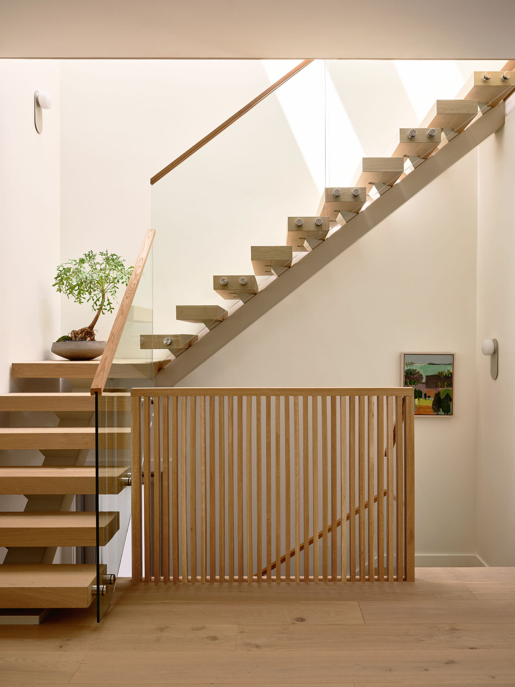

About
Point Studio Architecture + Design offers full architectural services for remodels, new homes, and new ADUs, with a focus on modern design and transformations of Bay Area vernacular architecture from Edwardians, to Craftsmans to Eichlers.
We take your project personally. Our goal is to create a space that embodies your family, your personality — a space that celebrates your unique lifestyle. We believe your home should be sensible while still inviting, expressing your spirit through light and warmth, authentic materials and serendipitous moments throughout.
Process
When you work with us, we acknowledge and appreciate the investment you are making in your home. We use our experience to encourage decisions that make the biggest impact toward your project goals, which stay front and center throughout the design process. Early on, we’ll walk you through different paths your project could take in terms of budget, timeline and design. We stay in communication on these expectations as the project evolves.
With connections to professionals across the Bay Area, we assemble the right team and workflow for each project — bringing in contractors, engineers, code compliance specialists, interior designers and landscape designers as needed. Think of us as your navigator from design ideation through project completion.
If you’re ready to learn more, the first step is simple.
Let’s set up an introductory conversation.


Megan Lizarraga Marchini
Megan is a licensed architect in California with over ten years of design experience. Her passion lies in designing homes and staying closely involved through the construction process.
Megan earned her Bachelor of Architecture, with a minor in Sustainable Environments, from Cal Poly San Luis Obispo, spending a year abroad at the École Nationale Supérieure d'Architecture Paris-Val de Seine. Before starting this adventure with Point Studio, she worked in higher education campus planning, then found her true passion in residential design — working as a designer and project manager on high-end custom homes.
As a fourth-generation Bay Area native, Megan’s connection to place runs deep: she and her husband purchased her grandparents' house in Richmond and reimagined it for their own family, bringing in much-needed upgrades along the way.
In addition to her practice, Megan teaches as a studio instructor for Cal Poly San Luis Obispo's SF Urban Program, a fourth-year studio in which students envision the revitalization of a large urban site in the Bay Area. In her free time, Megan enjoys spending time with her family, trips to the mountains, and running. In fact, she's probably on a run right now. She sketches constantly and dabbles in other art forms, having recently completed a black-and-white film photography class.